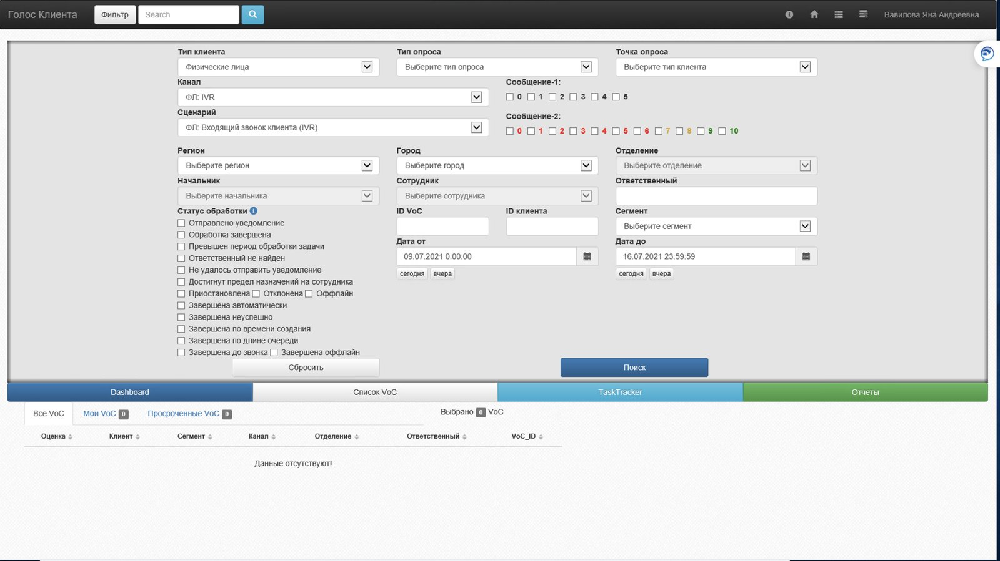
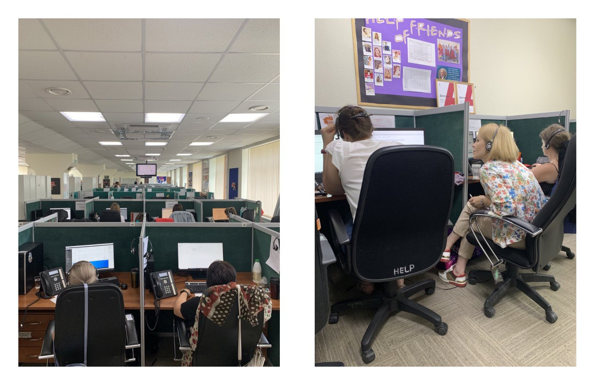
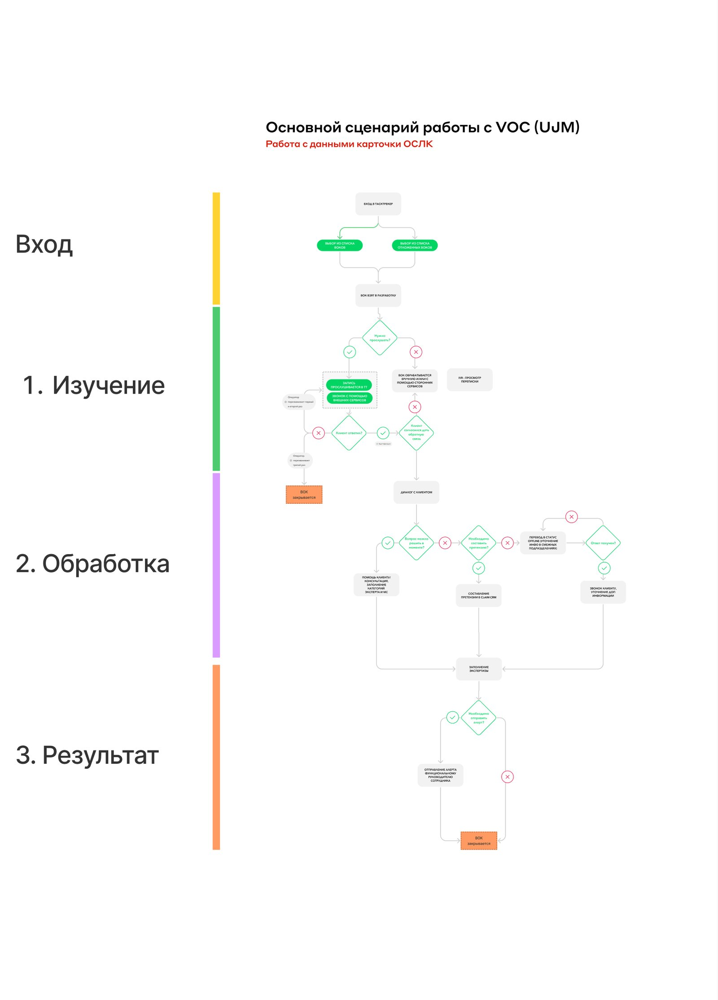
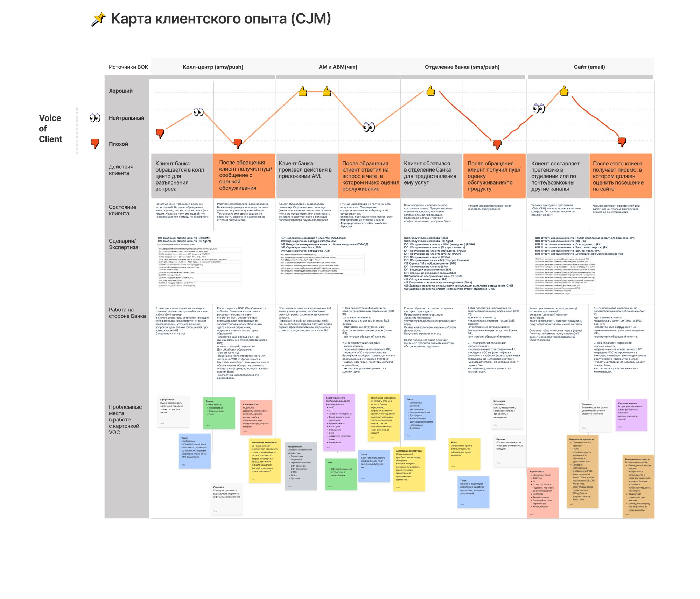
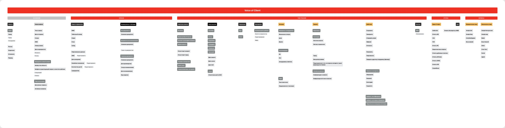
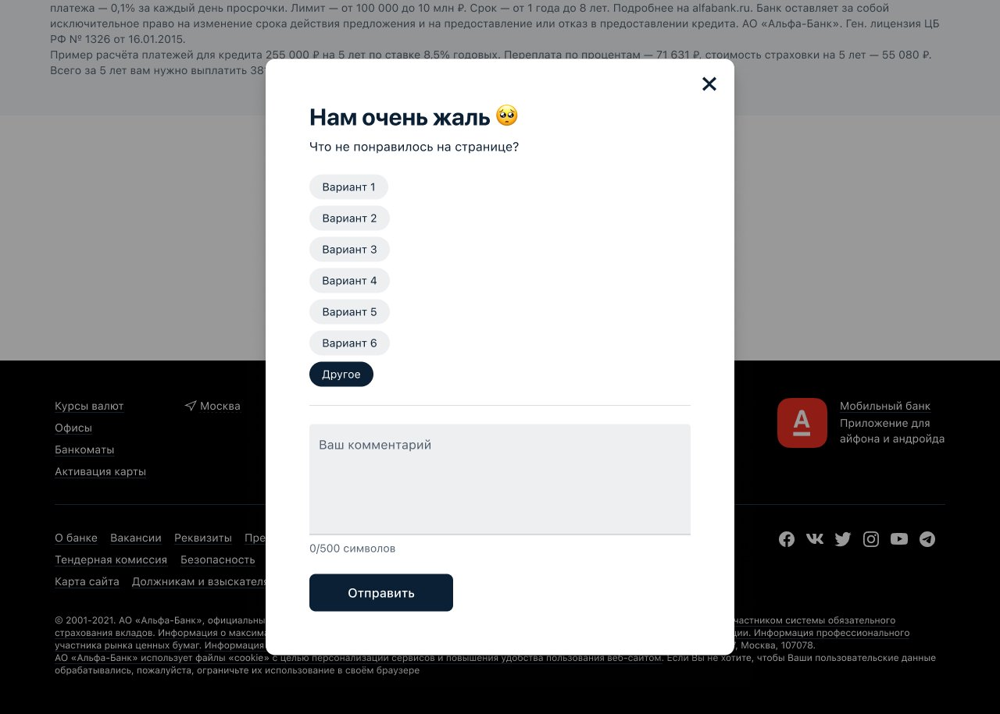
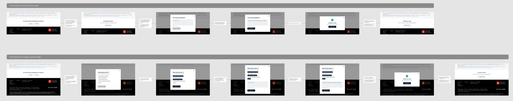
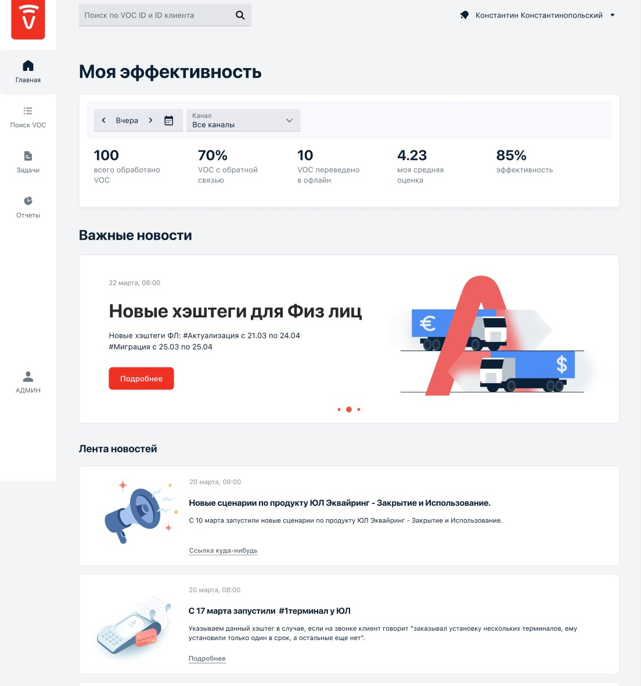
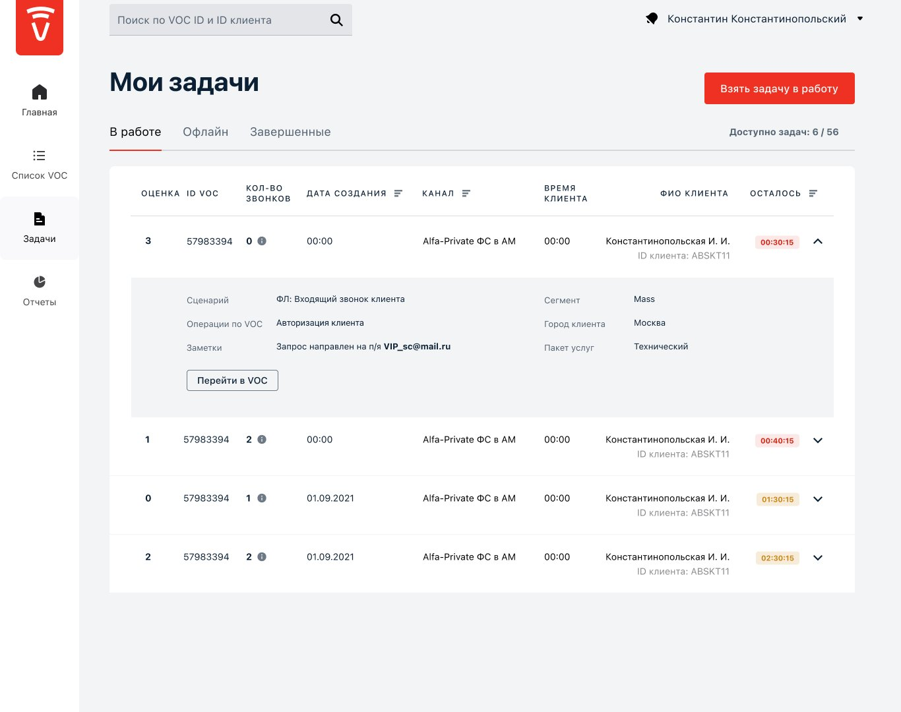
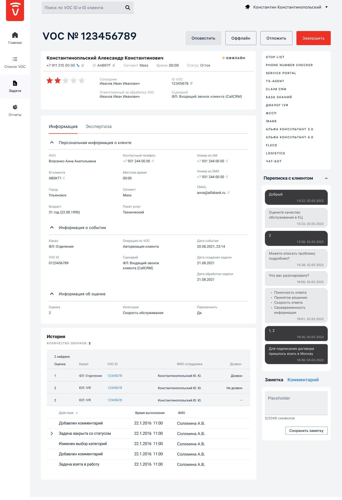

Alfa-Bank: Voice of Client
Redesign of the internal platform that collects customer ratings after every contact with the bank and helps experts resolve negative feedback. The goal: reduce churn and make the bank more attractive to new clients.
Key metrics after the VOC launch
events a year processed by the bank — 12 million more than before the platform
positive reviews from the bank’s clients
average request processing time (down from over 60 minutes)
An incomplete, delayed picture of customer experience
Part of the information about clients — from social networks, forums and phone calls — never reaches the bank’s systems, and part of what does (emails, call outcomes) is never analysed. With no single control mechanism, the history of interactions can’t be seen in one place.
Communication ran mostly through email and calls, request handling was manual, and service status at each stage was opaque. As a result the bank saw trends in customer relationships too late.
Objectives
Know the customer better- Systematise customer information management.
- Collect data from every bank stream, accounting for segment, channel and value to the bank.
- Give one simple interface where all interaction data lives together.
- Answer business questions within 15 minutes: how many clients are unhappy with credit cards this month, what’s the trend and why.
Higher satisfaction, lower churn.
Guaranteed handling time, better quality.
Lower costs, a digital process.
The legacy “Voice of Client”
The redesign goal: a coherent design product that helps the Loyalty Retention Department (OSLK) experts work faster and better. The old interface was dense tables and dozens of filters with no hierarchy.

- 1Entropy and unpredictability
- 2Poor legibility, dated UI
- 3No sense of priority
- 4Inflexibility
- 5Visual quality
- 6No coherence
A human-centred framework
We balanced people’s needs, technology and business goals. I led the work from strategy to prototype: the UX half — research and structure — and the UI half — components and final screens.
Strategy
Audience study, requirements
Research
Online and offline interviews, tests
Structure
Information architecture, UJM, CJM
Wireframes
Base user flow, low-fi layouts
Components
Checked against Alfa-Bank guidelines
Mockups
Final screens
Prototype
Delivery tracking
Weeks inside the call centre
To understand the problem we used experiments, surveys, questionnaires and many interviews. The core was field research: the team and I spent several weeks in call centres, answering calls and processing requests alongside employees.
We recorded everything that affects an expert’s work and the time to handle a complaint, and interviewed managers about how tasks are assigned and how pay and incentives are calculated, to balance the workload.

Svetlana, 35 — OSLK expert
Nine years at Alfa-Bank: started in the call centre, then moved to OSLK. Enjoys working with negative feedback — calming the angriest caller and hearing a compliment back. Goal: become a department head.
“It matters to feel valued by both clients and colleagues — to be irreplaceable and genuinely help people.”
- She logs the number of handled requests per day by hand, on paper.
- After “Postpone” the system doesn’t record when to come back to the card.
- The expert report takes ages — it’s written in Word.
- The number of call attempts isn’t visible on the card or in the task table.
Journey maps and architecture

- Average request processing time is over 60 minutes.
- No reliable database for real-time recommendations.
- Inconvenient navigation for employees.
- No collaboration between bank departments.
- Motivation and gamification for clients and employees.
- Calculating employees’ average plan (KPI).
- Timely notifications about changes at the bank.
- Splitting tasks by channel, stream and complexity.


Real-time ratings after every contact
External systems send VOC an event after a client contacts the bank.
VOC processes the event and sends the client a push or SMS with a poll.
The client rates the interaction on a 5-point scale and picks what they liked or didn’t.
For a 1–3 rating, an OSLK expert calls the client back and resolves the issue.
Outcomes are logged, and analytics and employee ratings are calculated from them.
Key screens

Rating widget
When a service is finished, the client is asked to rate it — triggered automatically after a specific operation. If it didn’t help, the client picks what went wrong and can leave a comment.


Home: “My performance”
The expert sees their numbers for the chosen period and channel at a glance — requests handled, with feedback, moved offline, average rating and efficiency. Below sit important news and a feed of changes at the bank: new hashtags, scenarios and channels.

My tasks
Tasks are split into In progress, Offline and Completed. Each row shows the rating, number of calls, channel and a countdown to the deadline, coloured by urgency. A row expands to show the scenario and notes without opening the card.

VOC card
Everything for the call on one screen: client data, the event and rating, call and action history, the chat with the client and notes. On the right — shortcuts to 14 external systems instead of hunting through bookmarks. The main actions — Notify, Offline, Postpone, Finish — stay at the top.
Who works in VOC
Expert
- Calls clients
- Picks the complaint category and subcategory
- Picks a category from the master directory
- Fills in the expert report in VOC
- Works with related departments to solve the issue
Manager
- Controls the task queue
- Reports on department performance
- Monitors the quality of OSLK experts’ work
- Manages the department’s workload
Hypotheses, not meeting-room debates
Instead of designing on intuition, we built a backlog of hypotheses and tested them with experts. Examples:
- The card lacks the data needed to prepare for a call.
- The expert needs to see the call count before the next call.
- Users don’t understand how to prioritise tasks with the existing components.
- Comments instead of a rating are misread by the system.
- Task status is unclear.
- The call button should be a green icon.
- It’s unclear how to copy data from the card.
- Cards read better without accordions.
- The user doesn’t need the client’s personal data.
- Blocks need more contrast.
- Every status gets its own colour.
- Spell checker.
- Call-centre service integration.
- Microsoft functions inside VOC instead of external software.
Want to learn more about this project or discuss a collaboration?
Get in touchLet's stay in touch!
I'm always open to new projects, long-term collaborations, and exciting ideas. Feel free to reach out through any channel.